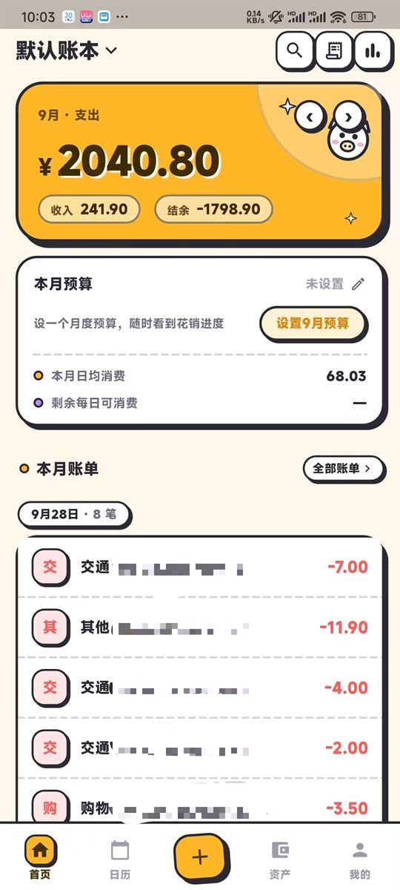
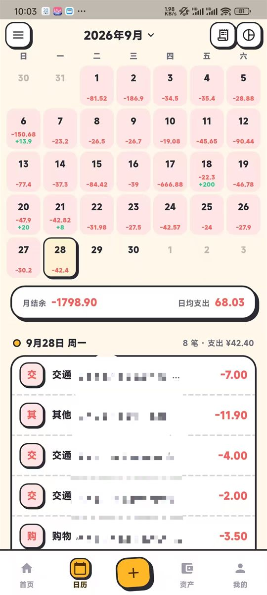
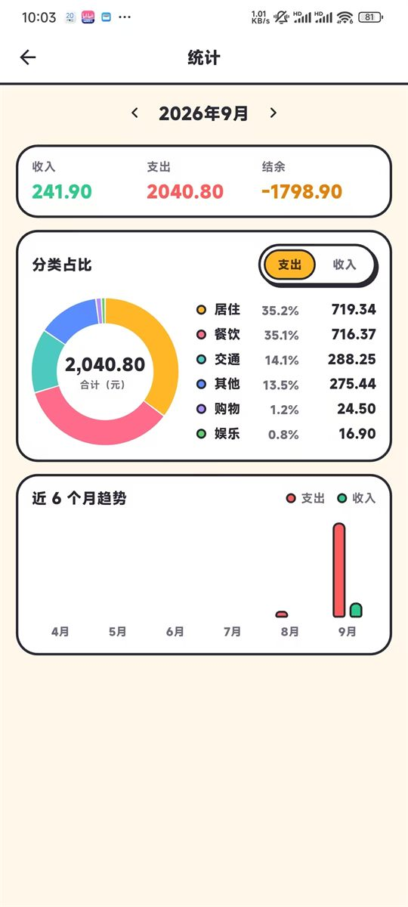

把账本留在自己手机里
无账号、无服务器、无网络请求、无广告、无埋点。 账单导入、自动记账、统计预算全部在本地完成；卸载即彻底删除，想留档自己导出。

功能地图
记账本身该有的都齐了，另外把「账单导入」和「自动记账」做成了主力功能。
首页流水
按天分组、月份切换、月度收支 hero、预算卡；左滑露出删除。
记一笔
自绘金额键盘 + 分类宫格 + 日期 / 账户选择，主按钮吸底随键盘上移。
搜索浮层
毛玻璃浮层，命中分类 / 账户 / 备注 / 金额文本，支持类型与时间指令。
日历
支出红 / 收入绿标注，长按记那一天的账，左右滑翻月；先出网格再加载账单，且翻不到未来月。
统计与报表
自绘圆环与趋势柱（不引图表库）；明细 / 分类 / 账户三档汇总。
预算与资产
月度预算环 + 剩余每日可消费；净资产与多账户管理。
账单导入
微信 xlsx / 支付宝 GBK 回单，解析五层 + 指纹幂等，重复导入不重复记账。
自动记账
监听支付通知自动入账，三层采集兜底，可一键撤销，附活性诊断页。
两级分类
一级点开收起二级；预置分类自带 33 条二级（餐饮→早餐/午餐/晚餐，交通→地铁/公交/共享单车）。
五套主题色
设置里一键换色：森绿 / 琥珀 / 黛蓝 / 藕粉 / 墨紫，整族色板跟着变，含深色模式。
实际界面
Redmi K50 实机截图，Material 3 主题（森绿 seed，可切五套配色）；界面元素全部代码绘制，不引图片资源。
月度支出 hero · 预算卡 · 按天分组流水

每日收支标注 · 长按记那一天 · 选中日账单

分类占比圆环 · 近 6 月趋势（全部自绘）
几个做得比较克制的地方
都是被真实 bug 逼出来的，不是堆架构。
- 1
drift 是唯一的数据库写入方
Kotlin 侧只把通知落盘成 JSONL，不解析、不碰库 —— 跨语言双写是最容易出脏数据的地方。
- 2
金额全程
int分禁止浮点。xlsx 甚至不用现成
excel包 —— 数值过 double 会丢 31 位交易单号精度。 - 3
纯函数优先
解析规则、命中口径、金额计算、聚合统计都是无副作用纯函数，
test()直接覆盖，不需要起 UI。 - 4
一个
dataEpoch版本号做统一的过期信号写操作成功后 bump 一行，常驻 provider 自己失效。此前手工 refresh 漏过统计页，直接出过 bug。
- 5
自动记账三层采集
支付通知在国产 ROM 上不投递、且只活 26 秒 —— 于是「实时回调 + 60s 补抓 + 撤回瞬间救援」三层共用一条判定链和持久指纹集。
规模
数字取自仓库本身，可复算。
从源码跑起来
Flutter 3.47.2 · JDK 17 · Android SDK（platform 36）。依赖版本锁死，别随手升级。
# 1) 取代码
git clone git@github.com:Xander-299/yanxin-keeping.git
cd yanxin-keeping
# 2) 依赖 + 生成 drift 代码（改表结构后必须重跑）
flutter pub get
dart run build_runner build --delete-conflicting-outputs
# 3) 门禁（与 CI 同一套）
flutter analyze
flutter test
# 4) 出包
flutter build apk --release --target-platform android-arm,android-arm64,android-x64详细步骤（签名、模拟器走查、发布） → README 构建说明 · 开发运维手册